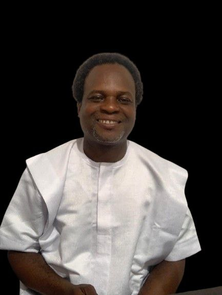

Our Founder

Bishop Dr. Saviour Agbelegbe
Bishop Dr. Saviour Agbelegbe is a highly respected pastoral leader with over 27 years of ministry experience and a dedicated herbal practitioner for more than a decade. He founded ASO College of Stewardship – Institute of Excellence, combining faith, education, and herbal medicine to empower spiritual leaders and communities.
Education & Training
- IT Diploma (GBCE) – ROK Professional Institute
- IT Degree (ABCE) – Agape University College
- Degree in Bible Theology – Prince Hegai Bible College
- Certificate in Naturopathy – Nyarkotey College of Holistic Medicine & Technology
Memberships & Skills
Memberships: TMPC, GHAFTRAN, THAG, GHACHDA, MFCC
Skills: Pastoral Leadership, Herbal Healing, Community Development, Public Speaking, Counseling, Program Planning
Our Vision
Empowering communities spiritually, mentally, and physically through education, faith, and herbal medicine.